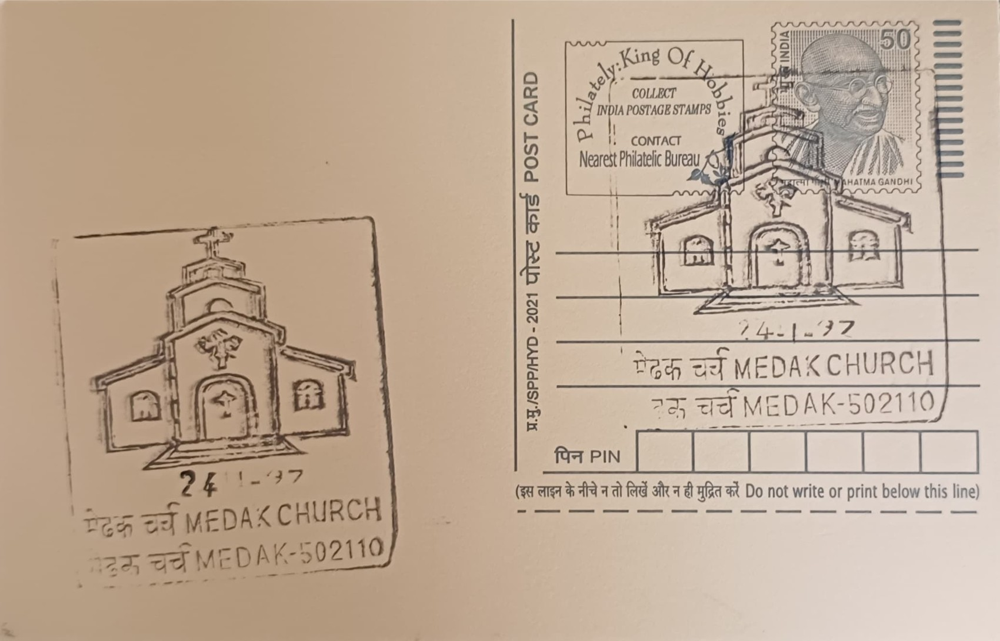

Medak Cathedral
మెదక్ కేథడ్రల్


The cathedral's origin lies less in religious legend than in a response to catastrophe: when the Medak region was struck by a severe famine lasting roughly from 1918 to 1921, Reverend Charles Walker Posnett of the Wesleyan Methodist Mission conceived the idea of a great church not merely as a place of worship but as a deliberate 'food for work' relief scheme. Rather than operate a free kitchen, Posnett employed starving farmers and laborers in quarrying stone and raising walls, giving them wages and dignity through construction rather than charity alone. The name tied to the building today, the Cathedral of the Epiphany, reflects its later ecclesiastical status rather than any founding myth, with the structure's genesis rooted firmly in documented colonial-era famine administration.
Today recognized as the seat of the Church of South India's Diocese of Medak since the diocese's formation in 1947, the cathedral ranks among the largest church buildings in Asia and is frequently cited as one of the largest in India by floor area. Its significance extends beyond denominational boundaries, functioning as a landmark of Protestant Christian heritage in the Deccan and as evidence of the scale missionary institutions reached in princely-era Hyderabad State, a Muslim-ruled territory where such a vast Christian edifice was nonetheless permitted to rise. The cathedral's listing among protected heritage structures in Telangana and its continuing role as an active diocesan seat underline a dual identity as both working church and historical monument.
Construction proceeded from 1914 to 1924 under the architectural direction of Thomas Edward Harding, with funding drawn substantially from the Posnett family's own wealth, accumulated through tanneries in Runcorn, England, supplemented by local government support during the relief effort. Built largely of local granite in the Gothic Revival idiom, the finished cathedral measures approximately 100 feet in width and 200 feet in length, with a bell tower rising around 173 to 175 feet and flanked by four corner pinnacles. The nave was designed to seat close to 5,000 worshippers at once, a capacity reflecting both the ambition of the relief-driven building programme and the scale of the Christian congregation that had grown across the surrounding villages during decades of mission activity.
Among the cathedral's most distinguished features are its three large stained-glass windows, created by the noted British artist Sir Frank Owen Salisbury and shipped from England, depicting the Nativity, the Crucifixion, and the Ascension in vivid color that casts patterned light across the granite interior on clear days. These windows, rare for their scale and artistic pedigree in a rural South Indian setting, have become the building's signature element, drawing art historians and photographers alongside worshippers. The contrast between the cathedral's soaring Gothic verticality and the low-rise, otherwise unremarkable town of Medak surrounding it remains one of the most frequently remarked aspects of any visit, lending the building an outsized visual presence relative to its setting.
The cathedral remains in daily use, open to visitors and worshippers from early morning until evening, and continues to serve as the administrative and liturgical center of the CSI Diocese of Medak, with regular services, diocesan functions, and a resident clergy maintaining the premises. Its upkeep has been supported over the years by the diocese itself along with heritage-conscious contributions from state tourism authorities, who list it among Telangana's principal colonial-era monuments. Having passed its centenary in 2024, the cathedral now functions simultaneously as an active parish church for the local Christian community and as a heritage attraction on the Hyderabad-Medak tourist circuit, a dual role that has kept both its religious and architectural dimensions in continuous public view.
| Date of Introduction | December 17, 2021 |
|---|---|
| Address | Senior Postmaster, |
| Medak HO, | |
| Medak (dt.), Telangana - 502110. |